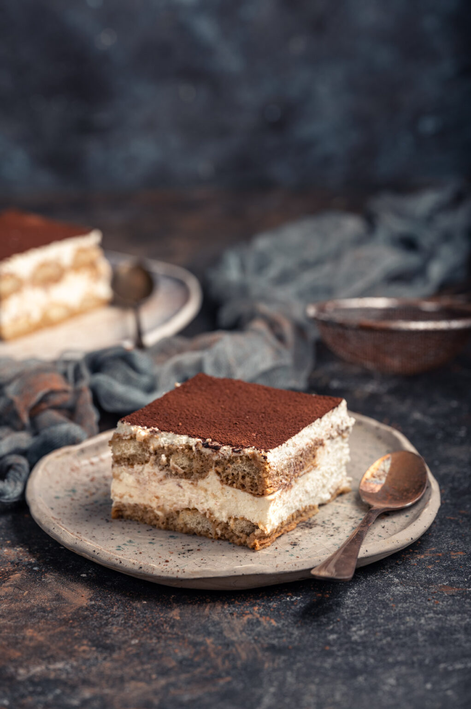

Tiramisu

Description
Today we show you how to make traditional italian Tiramisu. A dessert
made of Savoiardi ladyfingers soaked in coffee, arranged in layers
and filled with a cream made with mascarpone and eggs.
Ingredients
- 300 g (about 30) Savoiardi Ladyfingers. We recommend BALOCCO SAVOIARDI
LADYFINGERS,
- 500 g (1,1 lb = 2 1/4 cups) of mascarpone cheese
- 4 medium eggs
- 100 g of granulated sugar
- 300 ml of coffee (better if espresso)
- 2 tablespoons of Rum
- unsweetened cocoa powder
Instructions
- First of all, make the coffee. For a quick and delicious Italian coffee,
we used an Espresso Machine. Then add 2 tablespoons of Rum (optional)
- Separate the egg whites from the yolks. Set aside the yolks and whip
the egg whites until stiff: you will get at it when the the egg whites
will not move if you turn the bowl over. Remember that to whip egg whites
to stiff peaks, there should be no trace of yolk. Once ready, set aside.
- Now, in a bowl, beat the egg yolks with sugar until light and smooth, 3
to 5 minutes.
- In the meantime, pour the mascarpone cheese into a bowl and work it with
a spoon to make it softer. Mascarpone cheese must be of excellent quality,
creamy and thick. When the yolks are ready add the mascarpone cheese.
- Using the flexible-edge k-beater, slowly whip the mascarpone cream for 2
to 3 minutes. Now add the stiffly beaten egg whites.
- Mix with a wooden spoon, from bottom up. Mix slowly until smooth and creamy.
- Now let’s prepare the layers of ladyfingers and mascarpone cream. You can
make 2 or more layers, depending on the width and depth of your pan. Dip the
ladyfingers quickly (1 or 2 seconds) into the coffee. Then arrange the
ladyfingers in the casserole of your liking.
- Arrange them so that they cover the bottom of the casserole. Then spread
the mascarpone cream over the ladyfingers.
- Add another layer of ladyfingers and then top with more mascarpone cream.
If you are making the last layer, spread the mascarpone cream generously.
- Finally, sprinkle with cocoa powder. You can even add dark chocolate chips, if you like.
Allow to rest 3 hours in the refrigerator before serving. Even better if
you prepare the tiramisu the day before, letting it rest overnight.